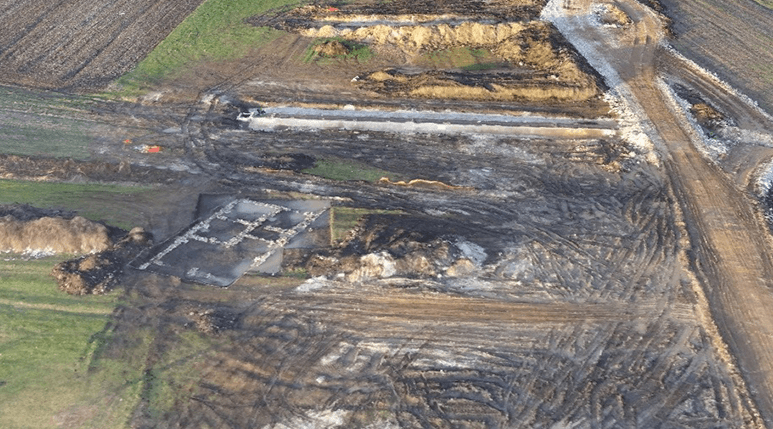
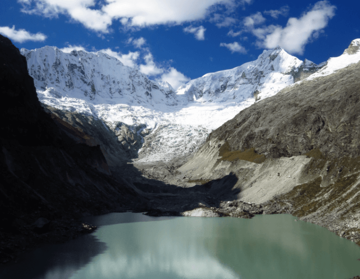
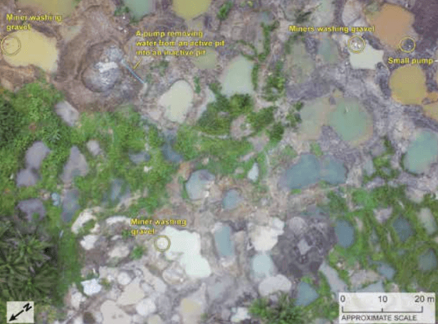
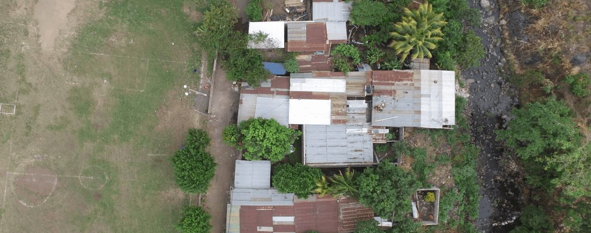
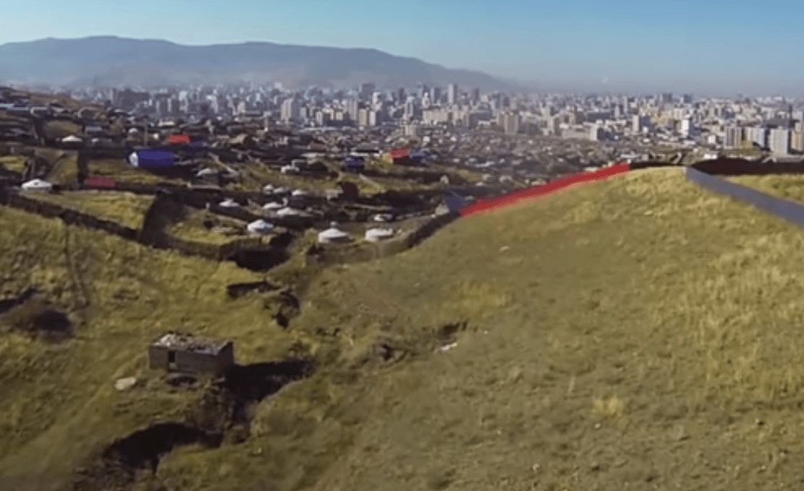
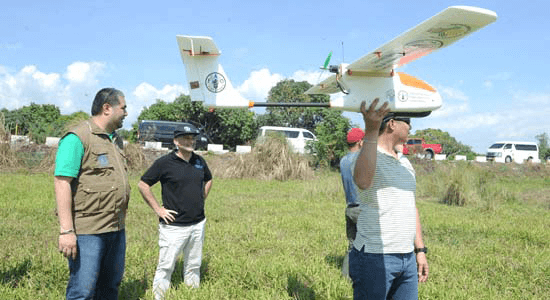
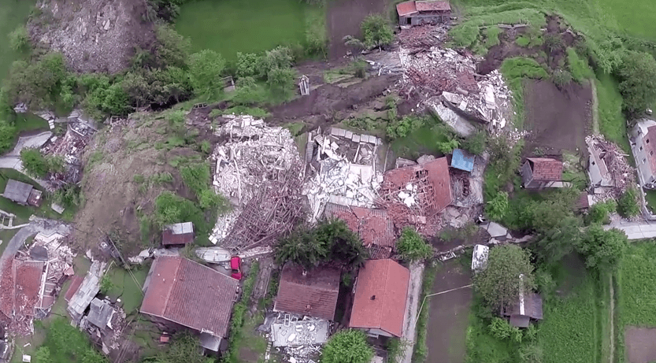
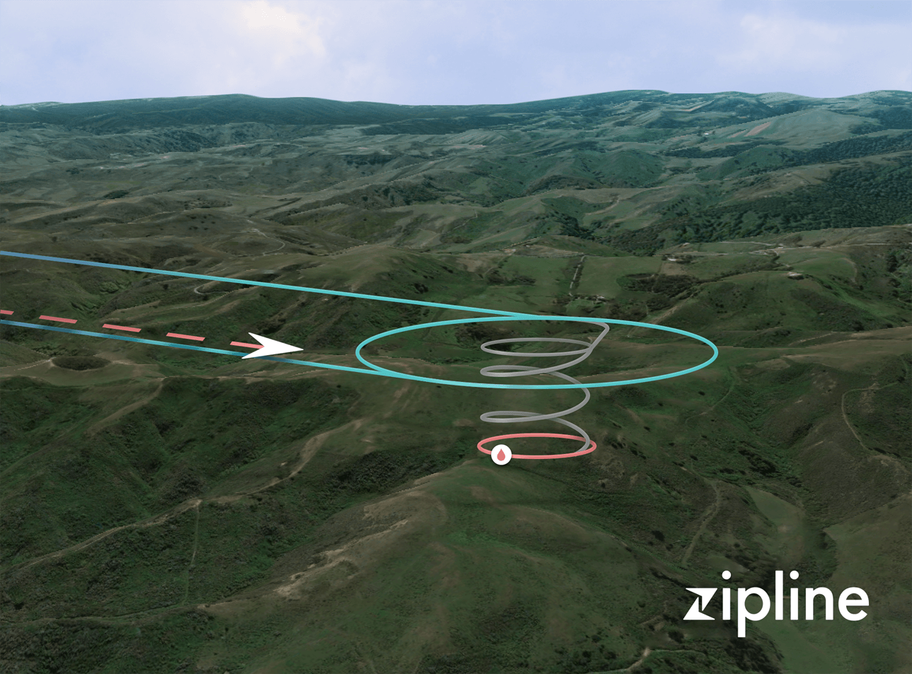

This section provides a broad selection of UAV deployments in the field. The purpose is to provide a brief overview of what is possible today, as well as directions in the future
UAV in Development Case Studies
- Cadastral & Community Mapping with UAVs in Albania
- Systemic Land Registration in the Republic of Kosovo
- Cyclone Post Disaster Needs Assessment in Vanuatu
- Delivering Sterile Tsetse Flies to Address Disease in Ethiopia
- Monitoring Climate Change Impact on Glacial Water Supplies with Custom-Built UAVs in Peru
- Mapping Artisanal Diamond Mines in Guinea
- Vector Control and Surveillance of Aedes Mosquitoes to Reduce Zika and Dengue Virus Risk in Guatemala
- Using UAV Imagery to Map Expanding Areas in the City of Ulaan Baatar, Mongolia
- Counting Animals at the Kuzikus Wildlife Reserve in Namibia
- Using Drones to Map Areas Affected by Malaria in Borneo
- UAV Mapping to Reduce Disaster Risk to Agriculture in the Philippines
- Tracking Landmine Movement after Flooding in Bosnia and Herzegoyina
- Mapping Hurricane Sandy Damage in Post-Earthquake Haiti
- Assessing Flood Risk in Sri Lanka
- Assessing Resettlement of IDPS in Uganda
- Fab Dar Aerial Mapping in Tanzania
- Post Emergency Damage and Risk Assessment in Uganda
- Delivering Blood Samples in Rwanda
1. Cadastral & Community Mapping with UAVs in AlbaniaParcel boundaries established with participation of Fushe Milot community using high resolution UAV-derived orthophoto. Credit: World Bank
World Bank
Drone Model: Micro Aerial Projects Multirotor UAS December 2013 > Learn More A December 2013 pilot test in Albania used UAV imagery to carry out cadastral mapping, with the dual goals of supporting land registration efforts and improving the quality of existing geospatial data in the test area. With funding from a World Bank innovation grant within the Europe and Central Asia (ECA) region, the team flew a multirotor mapping UAV over three different areas, producing aerial photographs, digital orthophotos, maps and 3D models. Flights over the Elbasan National Highway and nearby high-tension power lines demonstrated how UAV imagery can be used to inexpensively monitor infrastructure assets, while flights in the Komuna Farke area demonstrates UAVs utility in dense, urban environments. Imagery gathered at the Fushe Milot agricultural area - slated to host a new urban water supply project - was used to establish land-parcel boundaries with community participation. The results also aided in Detection & Prevention of Infrastructure Planning Conflicts, as planned water lines pierced through previously unmapped buildings. In total, the team flew 21 flights covering a distance of about 4000 KM. The resulting geo-referenced data was used to replace out-of-date orthophotos and paper maps, supporting the development of the Albanian National Spatial Data Infrastructure. |
2. Systemic Land Registration in the Republic of Kosovo

3D model of the highway construction and an archaeological site produced with 24 hour turn-around. Credit World Bank
World Bank Group Global Land and Geospatial Unit; Innovations in World Bank Vice Presidency for Leadership, Learning, and Innovation (LLI); Real Estate Cadastre and Registration Project (RECAP) Kosovo
Drone Model: Sensefly eBee fixed wing UAV December 2015 > Learn More Almost 70 percent of the planet's people lack access to formal land rights system, and the problem is even worse for women - like women in the Krusha e Madhe village in Kosovo, who are attempting to rebuild after the end of the Balkan conflicts. The World Bank has launched a $12 million Real Estate and Cadastre Project in Kosovo to address these land rights issues, and has recently begun to experiment with using drone imagery to create high-definition maps of areas that have yet to be added to the national cadastre system. A team from the World Bank's Innovation Labs traveled to Kosovo with a Sensefly eBee drone in December 2015 to carry out a cadastral mapping activity, in concert with the National Mapping Authority of Kosovo. The group ultimately carried out 25 flights across 1,581ha, collecting 11,315 photographs with a resolution of up to 3 CMs per pixel. The team was able to create an orthophoto depicting a 300 hectare area in just 24 hours, a considerable time improvement over ground-based surveying methods. The World Bank hopes that Kosovo cadastral mapping authorities will continue to integrate UAV imagery into their work, as the Real Estate and Cadastre Project continues to help more Kosovars get access to functioning land rights systems. |
3. Cyclone Post Disaster Needs Assessment in Vanuatu Damage to buildings mapped. Credit Micromappers
|
4. Delivering Sterile Tsetse Flies to Address DiseaseUAV approaching zone to release sterilised male tsetse flies. Video still, credit Embention.
|
|
World Bank GFDRR; Government of Vanuatu National Disaster Risk Management Office; UAViators; Mapbox; Humanitarian OpenStreetMap; MicroMappers
Drone Model: DJI Phantom 2 March 2015 > Learn More Over 150 UAV flights were carried out during the World Bank’s Post Disaster Needs Assessments following Cyclone Pam in Vanuatu in 2015. The World Bank faced a “Big Data” challenge as they were already overwhelmed with other datasets. To this end, the Bank activated the Digital Humanitarian Network (DHN), which led to the rapid analysis of both nadir imagery and oblique imagery to identify disaster damage to buildings. Volunteers from the DHN analyzed well over 4,000 aerial images in just a matter of days. Months after these efforts, the annotated imagery was used to create automated feature-detection algorithms by drawing on computer vision and deep machine learning techniques. At present, these algorithms can automatically determine with 95% accuracy whether oblique images include buildings in them. The algorithms can thus filter out unnecessary images, thus saving imagery analysts more time. |
International Atomic Energy Agency, FAO (UN); Ethiopian Ministry of Livestock; Embention
Drone Model: Embention fixed wing UAV Ongoing > Learn More Tsetse flies can cause debilitating disease in both humans and livestock, impacting health and food security. Spanish UAV-maker Embention has partnered with the International Atomic Energy Agency to create an umanned system capable of releasing large numbers of irridated, sterilized male tsetse flies into the wild, reducing the total population. As of April 2016, the fixed-wing Embention UAV was undergoing testing in Ethiopia. Ethiopian authorities have been releasing sterilized flies from manned aircraft for years to combat the parasite that causes trypanosomiasis (popularly known as "sleeping sickness.") Why use a drone to deliver the flies? Precision and price: the insects can be delivered in more specific areas, and operating the UAV is less expensive than hiring the services of an airplane and a human pilot. The "Drones Against Tsetse" project ultimately hopes to use the technology to rid a 200,000 square KM area in Ethiopia of tsetse flies, making it usable again for human habitation and agriculture. The UAV project is also supported by Ethiopian Ministry of Livestock and the United Nations Food and Agricultural Organisation (FAO). |
5. Monitoring Climate Change Impact on Glacial Water Supplies

A lake formed by glacial melt in the Cordillera Blanca mountain range in Peru. Credit Oliver Wigmore, courtesy of The Ohio State University.
|
6. Mapping Artisanal Diamond Mines in Guinea

Site map of artisanal diamond mining sites in Western Guinea. Credit USGS
|
|
Ohio State University
Drone Model: Custom-built multirotor UAVs Ongoing >Learn More Glaciers are an important water source for communities in Peru’s Cordillera Blanca mountain range - but warming climates could spell trouble for local water security. Ohio State researchers have begun using maps made by custom-built drones to study the impact of climate change on glaciers and wetlands, information that communities can use to plan ahead as the planet warms. With the UAV, scientists are able to inexpensively collect 10-cm resolution imagery in cloudy conditions that would obscure satellite views. Thermal cameras allow the researchers to identify which parts of the glacier are melting fastest, and an aerial perspective afford them a more “big picture” perspective than can be provided by mre traditional ground surveys. Not all the news is bad: the ongoing Ohio State study has found that the Cordillera Blanca groundwater system is in fact storing some glacial melt water, potentially buffering the water-supply decrease caused by the glacier meltdown. More worrisomely, UAV imagery indicates the Llaca glacier is thinning by 0.7 meters on average each year. Drone-data collected by ongoing glacier observation will, it is hoped, help water managers make better climate-change driven decisions in other glacial areas. |
USAID, United States Geological Survey
Drone Model: DJI Phantom 2 June 2014 >Learn More Stemming the flow of conflict diamonds requires accurate production tracking - a serious challenge in remote areas in developing countries, like Forecariah Prefecture in western Guinea. The U.S. Geological Survey (USGS) and the U.S. Agency for International Development (USAID) experimented with the use of a small UAV for mapping and monitoring artisanal diamond mining sites in June 2014, as part of the world's path towards formalizing the diamond industry under the Kimberley Process. The USGS/USAID team used an inexpensive DJI Phantom 2 drone for their pilot project, collecting both video and still images with 2 different digital camera models, while flying at an average altitude of 100 meters above the ground. The team found the imagery to be higher-resolution than available satellite imagery of the area, and noted that the ease of collecting the data with the drones could make artisanal and small-scale mining surveys more easy to regularly repeat. With the images, the team produced 10 cm resolution digital elevation models (DEMs) of mining areas, as well as high-resolution ortho-image mosaics of the areas of interest. These products will be used to locate and better understand area diamond deposits, and to conduct participatory mapping exercises to decrease conflict over desirable mining land. |
7. Vector Control & Surveillance of Aedes Mosquitoes

Aerial image over rural Guatemala. Credit RTI International
|
8. Mapping Expanding Areas in the City of Ulaan Baatar

Video Captured by UAV. Video still, credit Asia Foundation
|
|
RTI International
March & April 2016 >Learn More Bites from the Aedes mosquito are the primary sources of spreading the Zika and dengue viruses. RTI is researching integration of UAV technology into Aedes mosquito surveillance and vector control efforts at five test sites in Guatemala. Vector control attempts to limit or eradicate insects that transmit diseases such as Zika and dengue. Using UAVs, RTI collected aerial images that were analyzed to identify and map breeding sites—such as cisterns, pots and buckets, old tires, flower pots, and unused fountains—that could potentially support Aedes mosquito populations near rural villages. These images were aggregated into accurate maps to support targeted application of larvicides at these potential breeding sites. The maps can also be used in communication materials to demonstrate the specific risk conditions for a given village. |
Asia Foundation; Ulaan Baatar City Municipality
Drone Model:Trimble UX5 Fixed Wing Mapping UAV June 2015 >Learn More The Mongolian capital of Ulaan Baatar is one of Asia's fastest-growing cities, with an ever-expanding "suburban" area made up largely of gers, the traditional residences of Mongol nomads. In 2015, with support from Australian Aid, the Asia Foundation partnered with Ulaan Baatar City Municipality officials and local land surveyors to carry out a UAV mapping project of these new neighborhoods, in an effort to help local authorities add these new ger areas to the map and expand residents access to basic city services, such as water and waste collection. A Trimble UX5 fixed wing mapping UAV was used to collect over 100 square KM of elevation data and aerial imagery of ger districts outside Ulaan Baatar, at a detailed 9.6 CM resolution. These raw images were used to create a wide variety of useful GIS data outputs, from contour maps to road maps to accurate maps of newly-formed neighborhoods. During a weekend "Map-a-Thon," Mongolian citizens were invited to use the raw UAV imagery - posted on the OpenStreetMap platform - to create their own maps, recording features and details that are often invisible to professional surveyors. City officials will use the UAV imagery to inform their city planning efforts in the near future, as the informal ger neighborhoods continue to expand. |

Aerial view of a giraffe. Credit DroneAdventures
|
The map from UAV captured imagery combines drone images with yellow dots that track the movement of macaques as determined by a GPS collar. The red dot indicates a human case of malaria, which can spread from macaques via mosquitoes. Courtesy of Trends in Parasitology, Fornace et al
|
|
Drone Adventures; MicroMappers; Kuzikus Wildlife Reserve; Polytechnic of Namibia; l'Ecole Polytechnique Federale de Lausanne (EPEL)
Drone Model: Sensefly eBee fixed wing UAV Sept 2014 >Learn More A combined team used UAV imagery and crowd-sourcing technology to conduct wildlife counts at the Kuzikus Wildlife Reserve in Namibia, testing the effectiveness of aerial imagery for both wildlife census work and crowd-sourced solutions. To support the wildlife count crowdsourcing effort, the MicroMappers organization adapted its "Aerial Clicker" platform, which was originally developed to crowdsource the tagging of aerial imagery of humanitarian crises. The MicroMapper team realized that wildlife counts were an ideal non-disaster method of testing the technology. Working with UAV-focused Swiss NGO Drone Adventures, Polytechnic of Namibia, and l’École Polytechnique Fédérale de Lausanne (EPFL), the team shot over 25,000 aerial photos of conserved land at Kuzikus, using Sensefly's eBee fixed wing mapping drone. Over the course of a weekend, 500 volunteers analyzed the imagery using the MicroMappers platform, successfully identifying many animal species in the images and helping rangers get a more accurate sense of wildlife numbers in the reserve. It is hoped this crowdsourcing technology will be similarily useful when it is deployed to quickly analyze post-disaster imagery - shot by drones or satellites. |
London School of Hygiene & Tropical Medicine
Drone Model: Sensefly eBee fixed wing UAV Ongoing >Learn More In Borneo, a type of malaria parasite (Plasmodium knowlesi) most common in macaque monkeys has begun to infect humans, even children, families, and others who rarely spend time in the forest. Researchers from the London School of Hygiene and Tropical Medicine in the UK are using a drone to map malaria affected communities and surrounding areas, in an effort to understand how and why this cross-species jump is taking place. The fixed wing Sensefly eBee drone used in the mapping project can fly for 50 minutes and carries a 16 megapixel camera, enabling it to photograph relatively large areas. Researchers use these pictures to to generate photographic maps and 3D digital surface models of impacted areas, which are overlayed with the movement patterns of human beings carrying GPS receivers and macaque monkeys fitted with GPS collars. This superimposition allows researchers to identify places where humans and monkeys are most likely to come into direct or indirect contact - and to gather more clues as to why both species are drawn to some areas and not to others. Current theories derived from the UAV imagery include changes in land use that have made human habitations more attractive to monkeys, and small-scale deforestation that impacts monkey habitat, forcing them to live closer to people. Mapping human-monkey contact isn't their only use: the UAVs are also capable of identifying where GPS-fitted monkeys prefer to congregate, and can even be used to monitor watery areas that are likely breeding grounds for malaria-carrying mosquitoes. |
11. Mapping to Reduce Disaster Risk to Agriculture in the Philippines

Food and Agriculture Organization in the Philippines and Department of Agriculture-Field Operations Service launch a UAV, part of a program that supports disaster risk reduction efforts in the agriculture sector. Credit BusinessWorld
|
12. Tracking Landmine after Flooding in Bosnia and Herzegovina

Aerial Flood Damage. Video stills Credit: ©SpaceTec Partners & Icarus FP7 project
|
|
Philippine Department of Agriculture; Food and Agriculture Organization (FAO)
Drone Model: Fixed-wing UAV Ongoing >Learn More Climate change will make natural disasters more common, and farmers and fishermen are at particular risk of having their livelihoods impacted - at a considerable cost to national and international food security. The Philippine's Department of Agriculture has partnered with the FAO to experiment with the use of drones for conducting damage and risk assessments of agricultural land, hoping that the high-definition imagery will help authorities predict which areas are at most risk of damage from natural disaster. The aerial vehicles will allow them to survey more land than is possible on foot, at a lower cost than more conventional aerial photography methods. The imagery will assist policymakers with crafting more effective plans for disaster response, as well as creating early-warning systems geared to the particular needs of famers and fishermen. “With the use of a drone, a team of technical specialists can assess up to 600 hectares in one day, significantly accelerating the process of projecting the extent of damage that an incoming hazard may cause in agricultural areas, and quantifying actual damage after a disaster,” said Director Christopher Morales of the DA Field Operations Service, in a FAO press release. The pilot, which began in March of 2016, will also collect information that can be used to enhance agricultural infrastructure and to conduct environmental monitoring, in addition to its primary assessment purpose. |
TIRAMISU and ICARUS consortia; Belgian Royal Military Academy (RMA); Bosnia and
Herzegovina Mine Action Centre (BHMAC); University of Sarajevo
Drone Model: MD4-1000 Multicopter Microdrones May 2014 >Learn More Historic flooding and landslides in Bosnia and Herzegovina in the spring of 2014 shifted mines and explosive remnants of the Balkans war out of their original positions and into inhabited areas. As part of post-flooding demining and mapping efforts, the Belgian Royal Military Academy (RMA) team and the Bosnia and Herzegovina Mine Action Centre (BHMAC) experimented with the use of multirotor UAVs to conduct aerial surveys of flooded, mine-affected areas, which were too small to be effectively mapped with a manned helicopter. The team used two MD4-1000 Multicopter Microdrones for their survey work, both of which were equipped with a standard digital camera and near-infrared sensor. The multicopters carried out a total of 20 flights in 13 flood-affected areas, flying at an altitude of up to 150 meters, in line with national airspace regulations. The drone-collected imagery was processed in Agisoft Photoscan software, producing orthomosiac images and 3D models. These data products were analyzed by University of Sarajevo researchers, who used statistical models to identify areas where mines and ERWs were most likely to have shifted. The UAVs were also used to carry out initial surveys of areas deemed to be too high-risk to enter on foot - a safer way for deminers to narrow down their search area. |
13. Mapping Hurricane Sandy Damage in Post-Earthquake Haiti
Imagery of the Grey River in Port au Prince overlaid on a street map. Credit MapBox; OpenStreetMap
|
14. Assessing Flood Risk in Sri Lanka

Left: UAV imagery acquired by the Survey Department of Sri Lanka captured extreme detail for tracing homes, roads, and even power lines. Credit: MapBox; OpenStreetMap; Digital Globe.
|
|
IOM; OpenStreetMap Community of Haiti (COSMHA); Drone Adventure
Drone Model: Sensefly Swinglet October 2012 >Learn More
Heavy rains associated with Hurricane Sandy struck Haiti in October 2010, causing 54 deaths, considerable property damage, and complicating rebuilding efforts after the devastating 2010 earthquake. International Organization for Migration (IOM) and the OpenStreetMap Community of Haiti (COSMHA) - already in place as part of th earthquake rebuilding efforts - deployed an IOM drone to carry out a damage assessment four days after the rainfall disaster began. The fixed-wing Sensefly Swinglet drone was used to acquire high definition imagery of an area along the flooded Grey River, which was then processed into an orthomosiac image. This orthomosiac of aerial images was compared with baseline satellite imagery and existing census data, allowing analysts to do a "before and after" damage assesment. The UAV imagery was used to carry out damage assessments, allowing aid workers to precisely determine the number of people and homes impacted and quickly put together a compensation plan. The imagery also was used for future resilience planning: the drone imagery was shot at the maximum flood extent of the Grey River, allowing IOM to create a more accurate construction plan for a new flood boundary wall in the imaged area. |
World Bank Global Facility for Disaster Reduction and Recovery (GFDRR); Sri Lankan Government Disaster Management Center; Survey Department of Sri Lanka; Mapbox
Drone Model: Drone Model: eBee and locally assembled quadcopters April 2016 >Learn More The World Bank in partnership with the Sri Lankan Government Disaster Management Center, as well as the Survey Department, assessed flood risk in the Mundeni Aru and Attanagalu Oya River Basins. The World Bank is using a combination of satellite and UAV imagery to improve OpenStreetMap data in order better assess financial and humanitarian risk from recurring floods. The UAV imagery composited on top of satellite imagery provides extremely detailed imagery and terrain models for vulnerable areas. The portability of UAVs, matched with the high spatial resolution of imagery they provide make them an excellent tool to aid in mapping where aerial or walking surveys are out of date, nonexistent, cost prohibitive or otherwise hard to obtain. |
15. Assessing Resettlement of IDPS in Uganda
New latrines and infrastructure in Kiryandongo. Credit UNICEF Uganda
|
16. Fab Dar Aerial Mapping in Tanzania
Aerial image over Dar es Salaam: Tandale Market. Credit Mark Iliffe
|
|
Uganda Office of the Prime Minister; UNICEF
Drone Model: Drone Model - DJI Phantom 3 Advanced May 2016 >Learn More> UAVs are effective tools for program monitoring and demonstrating results via video footage. In 2010, at least 100 Ugandans were killed by landslides in 8ududa District after heavy rains. After an assessment by the Office of the Prime Minister, 601 at risk households were relocated to Kiryandongo District. The Office ofthe Prime Minister (OPM) has been working to move these households from temporary shelters to more permanent houses, provide them with 2.5 acres land for agriculture, and ensure services - such as education and health - are available. Additionally, OPM is making efforts to ensure that the resettled populations are integrated into the host community. The UAV footage took captures both the initial housing structures, as well as subsequent efforts by government to improve services. |
World Bank Transport and ICT Global Practice
March 2014-April 2015 >Learn More Dar es Salaam, Tanzania is one of Africa's fastest growing cities with a population of over 5.5 million. This creates many challenges, amongst them how to plan, build and provide services in such a rapidly growing and changing urban environment. Access to accurate up to date data is critical. The Fab Dar project, funded by SIDA Trust Fund, has provided high resolution imagery and elevation data. The data has been used in the creation of flood inundation models to assess flood risk, high resolution orthophotos which have lead to the Ministry of Lands requesting to use such imagery in their Tanzanian Land Tenure Program's for issuing Certificates of Customary Right of Occupancy. Fab Dar has used two types of drones: a fixed wing Sensefly e8ee and a multiple rotor DJI Phantom. The e8ee provides very high resolution (2.5cm) aerial imagery and (Scm) 3D models, these outputs can either be digitised to create data products on roads or rivers and processed to create flood inundation and impact scenarios. The Phantom allows for videos to be taken providing a quick assessment of the impact of flooding. Each of these UAVs can be operated quickly from the field, providing very timely imagery. Now these streams of data are available, progress is being made in supporting the data infrastructure of Tanzania, convening discussion around open data licensing, drone regulation and the creation of flood inundation models - tools that can inform flood resilience, resettlement, land tenure and cadastral mapping. |
17. Post Emergency Damage and Risk Assessment in Uganda
Using footage taken from a UAV to show the damage in Bundibugyo in a video. Credit UNICEF Uganda
|
18. Delivering Blood Samples in Rwanda

Flight path diagram over Rwanda. Credit Zipline
|
|
UNICEF, supporting the Office of the Prime Minister and Ugandan Red Cross
Drone Model: Drone Model - DJI Phantom 3 Advanced March 2016 >Learn More In May 2016, there were major rains in the Bundibugyo District of Uganda which caused flooding of a trading centre and multiple landslides, killing 13 - mostly women and children - and injuring over 50. Working with the Red Cross, UNICEF recorded video footage with a UAV to conduct damage and risk assessments within the affected trading centre, along the river banks, and in the mountains at the three landslide locations where fatalities occurred. |
Zipline
Drone Model: Zipline fixed wing cargo UAVs Ongoing >Learn More Health workers in remote areas with poor roads often find it difficult to move fresh blood and other essential medical supplies from place to place. California start-up company Zipline intends to pilot its cargo drone delivery service in Rwanda starting in July of 2016, in an effort to demonstate that inexpensive unmanned craft can help improve health outcomes and speed up courier services. The initial drone delivery pilot will use 15 fixed-wing aircraft capable of lifting 3.5 pounds and making flights of up to 75 miles roundtrip. Equipped with a GPS, the drones are able to navigate from place to place with the help of Rwanda's large cellular data network, enabling them to make deliveries within an hour of the network receiving a request for supplies. The UAVs make their deliveries by dropping small parachute-equipped packages, and don't require a runway to land when they return to their home bases. Zipline hopes the drone network will be able to make up to 150 daily blood deliveries to Rwanda's 21 transfusing facilities when it is launched, covering roughly half of the country's land area, and serving as a more reliable alternative to motorcycle delivery services. The system may also be used to transport vaccines, tuberculosis medications, AIDs medications, and other important supplies. The drones will operate with the explicit agreement of the Rwandan government and Civil Aviation Authority. |